# general imports
import numpy as np
from scipy.stats import norm
import jax.numpy as jnp
from jax import jit
from functools import partial
import matplotlib.pyplot as plt
import matplotlib as mpl
import pandas as pd
import seaborn as sns6 Results
In this section, we show how we obtain our results. The figures shown here are the main and supplementary figures in our article. The key results can be summarized as follows: * The influence of optimism on performance in a two-armed bandit task is modulated by resource scarcity * Optimism increases risk-seeking in a risk-reward dilemma * Optimism enhances cooperation in a stag-hunt game * Optimism/pessimism has no effect on cooperation in a prisoner’s dilemma
First, we import what we need.
# pyCRLD imports
# Agents
from pyCRLD.Agents.Base import abase
from pyCRLD.Agents.StrategySARSA import stratSARSA
# Environments
from pyCRLD.Environments.SocialDilemma import SocialDilemma
from pyCRLD.Environments.RiskRewardDilemma import RiskRewardDilemma
from pyCRLD.Environments.DistTwoArmedBanditOneState import DistTwoArmedBanditOneState
# Utilities
from pyCRLD.Utils.Helpers import *
from pyCRLD.Utils.Trajectories1D import trajectories_1D
from pyCRLD.Utils.PhasePlot import phaseplot, _data_to_plot, _strategies, _dXisa_s
from pyCRLD.Utils import FlowPlot as fp# DDRL imports
from DDRLBase import DDRLBase
from DDRLSarsa import DDRLSarsaThe influence of optimism on performance in a two-armed bandit task is modulated by resource scarcity
We want to study the effect of optimism/pessimism in a two-armed bandit task. To do so, we define functions that help us visualize * the phase plots for varying levels of optimism/pessimism * the deterministic strategies over time for varying levels of optimism/pessimism * the average payoff collected over time for varying levels of optimism/pessimism.
## Functions to generate phase plots + trajs + mean rewards
# Obtain dX as a function of X for phase plots
# Also works when N=2 or Z=2
def obtain_dXs(aei, # agent-environment interface
res, # range & resolution of strategies
xinds:tuple, # of indices of the phase space object to plot along the x axis
traj_len:int, # trajectory len
otherXs=None, # when N=2 or Z=2: values of X in 2nd condition
):
l = len(res)
dXs = np.zeros((aei.Z, l)) # will store the dXs
for i in range(aei.Z):
for j, xval in enumerate(res): # loop over Xs
if (aei.N > 1) or (aei.Z > 1): # 2 states or 2 actions
xval_ = otherXs[j]
else:
xval_ = None
X = obtain_Xs(aei, xinds, xval, xval_) # create X with values along all dims
prederror = aei.TDerror(X, norm=True) # compute pred error
dX = aei.step(X)[0] - X # compute dX
dXs[i, j] = dX[xinds[0], i, xinds[2]] # dX for i,s,a of interest
return dXs
def obtain_Xs(aei, # CRLD multi-agent environment object
xinds:tuple, # of indices of the phase space item to plot along the x axis
xval:float, # the value of the phase space item to plot along the x axis
xval_:float # the value of X in the 2nd condition
):
N, C, M = aei.N, aei.Z, aei.M # Number of agents, states, actions
Xs = np.zeros((N, C, M)) # will store the Xs
xi, xc, xa = xinds # plotted agent, state, action
xa_ = tuple(set(range(M)) - set(xa)) # other action
Xs[xi, xc, xa] = xval # setting x value
# probability of taking other action
Xs[xi,xc,xa_] = 1-Xs[xi, xc, xa]
if C > 1: # more than one state
xc_ = tuple(set(range(C)) - set(xc)) # other state
Xs[xi, xc_, xa] = xval_ # strategy in state 2 for action 1
Xs[xi, xc_, xa_] = 1 - Xs[xi, xc_, xa] # strategy in state 2 for action 2
if N > 1: # more than 1 agent
xi_ = tuple(set(range(N)) - set(xi)) # other agent
Xs[xi_, xc, xa] = xval_ # other agent's strategy for action 1
Xs[xi_, xc, xa_] = 1 - Xs[xi_, xc, xa] # other agent's strat for action 2
return Xs
# Compute X traj and reward traj
def reward_traj(aei, # CRLD multi-agent environment object
X:tuple, # strategy
i, # agent
traj_len:int=500, # trajectory length
):
r_traj = np.zeros((traj_len)) # will store rewards
# Compute X trajectory
traj, fpreached = aei.trajectory(X, traj_len)
# Compute reward trajectory
for t in range(traj_len):
r_traj[t] = aei.Ri(traj[t,...])[i]
return traj, r_traj
# Plot phase plot, X traj and reward traj for various levels of optimism/pessimism
def compare_levels(env, # environment
level_list, # list of levels
gamma, # discount factor
beta, # choice intensity
Rmin, # min reward perceived
Rmax, # max reward perceived
xinds:tuple, # which phase space axes to plot along x axes
res, # specify range & resolution
nrb:int=29, # number of neurons
discsig:float=0.05, # discretization sigma
lr:float=0.1, # learning rate
traj_len:int=500, # trajectory length
otherXs=None, # if 2nd condition: values of X along this condition
cmap='viridis', # colormap
save=False, # save fig?
savename=None, # saved figure's name
axes=None, # Axes to plot into
):
# Fig and Axes
# Style
sns.set_style("whitegrid")
sns.set_context("paper", font_scale=1.5, rc={"lines.linewidth": 2})
# Subplots: phase plot, X traj, reward traj
fig, (ax1, ax2, ax3) = plt.subplots(1, 3, figsize=(4.5 * 3.8, 3.8))
# Colormap for the different lines
cmap = mpl.colormaps[cmap]
ext = np.linspace(0, 1, len(level_list)) # extent of colormap
colors = cmap(tuple(ext))
# Neutral agent is represented with a black line
colors[int(len(level_list)/2)] = [0, 0, 0, 1]
# Zero line
zero = np.zeros((len(res)))
# Loop over optimism/pessimism levels
for j, level in enumerate(level_list):
# Define agent-environment interface
aei = DDRLSarsa(env, nr_reward_bins=nrb, discretization_sigma=discsig,
learning_rates=lr, discount_factors=gamma,
choice_intensities=beta, Rmin=Rmin, Rmax=Rmax,
method="weights", wU=level, use_prefactor=True)
# Obtain the dXs for y-axis of phase plot
dXs = obtain_dXs(aei, res, xinds, traj_len, otherXs)
# Phase plot
ax1.plot(res, dXs[0, :], color=colors[j])
ax1.plot(res, zero, color="grey", ls='dashed') # plot zero line
# Obtain X traj and reward traj
X0 = np.ones((aei.N, aei.Z, aei.M)) * 0.5 # init random strategy
X_traj, r_traj = reward_traj(aei, X0, 0, traj_len=traj_len)
# X traj plot
ax2.plot(np.arange(0, traj_len), X_traj[:,0,0,0],
color=colors[j], label=r'$w_{U}=$'+str(level))
# Reward plot
ax3.plot(np.arange(0, traj_len), r_traj,
color=colors[j], label=r'$w_{U}=$'+str(level))
# Decorations
ax1.set_ylabel(r"$dX$")
ax1.set_xlabel("strategy "+r'$X$')
ax1.set_title('phase plot')
ax2.set_xlabel("time step "+r'$t$')
ax2.set_ylabel("strategy "+r'$X^{0,0,0}(t)$')
ax2.set_title('strategy over time')
ax3.set_xlabel("time step "+r'$t$')
ax3.set_ylabel("reward "+r'$R^{0}(t)$')
ax3.set_title('mean reward over time')
ax3.legend(bbox_to_anchor=(1.01, 1.01), title='weights '+r'$w_U$')
fig.tight_layout()
# Save figure
if save == True:
plt.savefig(savename, dpi=300, bbox_inches='tight')Influence of optimism/pessimism on performance in a poor environment
In a “poor” two-armed bandit task, rewards are scarce. We thus define a two-armed bandit task with \(p_1 = 0.3\), and \(p_2 = 0.1\).
# Poor environment
xs = np.array([[-1, 1],
[-1, 1]])
ps = np.array([[0.7, 0.3],
[0.9, 0.1]])
env = DistTwoArmedBanditOneState(disttype='discrete', xs=xs, ps=ps)Now, we can plot the phase plot, strategy over time, and reward over time, of an agent which performs this task. We compare several levels of optimism and pessimism. These levels are defined by the upper weights \(w_U\) - that is, the weights the agent applies to the upper part of the distribution.
# List of weight values to compare
weights = np.array([0.1, 0.2, 0.4, 0.8, 1., 2., 4., 8., 10.])
# i,s,a to plot along the x-axis
x = ([0], [0], [0])
# Range and resolution of X
res = np.linspace(0, 1., 21)
res[0] = 0.0001
res[-1] = 0.9999compare_levels(env, weights, gamma=0., beta=4., Rmin=-1, Rmax=1,
xinds=x, res=res, nrb=29, discsig=0.05, traj_len=100,
cmap='coolwarm', save=True,
savename='_figs_v1/TwoArmedPoorPhasePlot.png')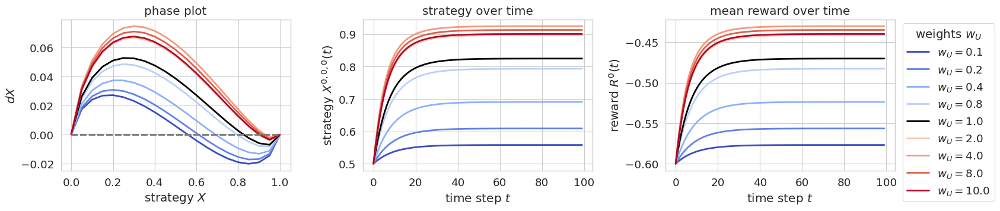
Influence of optimism/pessimism on performance in a rich environment
In a “rich” two-armed bandit task, rewards are abundant. We thus define a two-armed bandit task with \(p_1 = 0.9\), and \(p_2 = 0.7\).
# Rich environment
xs = np.array([[-1, 1],
[-1, 1]])
ps = np.array([[0.1, 0.9],
[0.3, 0.7]])
env = DistTwoArmedBanditOneState(disttype='discrete', xs=xs, ps=ps)Now, we can plot the phase plot, strategy over time, and reward over time, of an agent performing the rich task. We compare the same levels of optimism and pessimism as above.
compare_levels(env, weights, gamma=0., beta=4., Rmin=-1, Rmax=1,
xinds=x, res=res, nrb=29, discsig=0.05, traj_len=100,
cmap='coolwarm', save=True,
savename='_figs_v1/TwoArmedRichPhasePlot.png')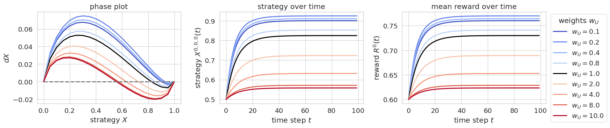
Comparison between the three DDRL biasing methods and asymmetric RL
Asymmetric RL was previously used to model optimism and pessimism in simple RL algorithms. It postulates a pair of asymmetric learning rates: a learning rate \(\alpha^{+}\) that updates positive prediction errors, and a rate \(\alpha^{-}\) that updates negative prediction errors. The bias strength \(b\) is defined by the learning-rates ratio:
\[ b = \frac{\alpha^{+}}{\alpha^{-}} \]
Cazé and Van der Meer (2013) have shown that, for an agent with bias strength \(b\), the Q-value at steady-state of arm \(a_{i}\) is:
\[ Q^{a_i}_{\infty} = \frac{p_{a_i} \cdot b - (1 - p_{a_i})}{p_{a_i} \cdot b + (1 - p_{a_i})} \]
Below, we compare the final strategies obtained with the three DDRL biasing methods (quantile, expectile, weights) against the final strategies obtained with asymmetric RL.
First, we define functions that will help us visualize these comparisons.
## Functions for comparisons between DDRL biasing methods and asymmetric RL
# Compute Q-value gap at steady state
def deltaQinf(p0, # reward prob of arm 1
p1, # reward prob of arm 2
b): # bias strength
return ((p0 * b - (1 - p0)) / (p0 * b + (1 - p0))) - ((p1 * b - (1 - p1)) / (p1 * b + (1 - p1)))
# Compute prob of choosing most rewarding arm at steady state
def Xinf(dQ, # Q-value gap
beta): # choice intensity
return 1 / (1 + np.exp(beta * (-dQ)))
# Compute final strategies for quantile, expectile, weights, and asymRL methods
def compute_comparisons(p0, # reward prob of arm 1
p1, # reward prob of arm 2
b_ratios, # bias strengths for asymRL
q_list, # quantiles
e_list, # expectiles
w_list, # weights
gamma, # discount factor
beta, # choice intensity
Rmin, # min reward perceived
Rmax, # max reward perceived
nrb:int=29, # number of neurons
discsig:float=0.05, # discretization sigma
lr:float=0.1, # learning rate
axes=None, # axes to plot into
):
# Create 2-armed bandit
xs = np.array([[-1, 1],
[-1, 1]])
ps = np.array([[1-p0, p0],
[1-p1, p1]])
env = DistTwoArmedBanditOneState(disttype='discrete', xs=xs, ps=ps)
# Compute asymRL Xinf for each bias strength
b_dQs = deltaQinf(p0, p1, b_ratios) # Q-value gaps
b_xinf = Xinf(b_dQs, beta) # final strategies
# Compute quantile Xinf for each quantile
q_xinf = np.zeros((len(q_list)))
for i, q in enumerate(q_list):
# Define agent-env interface
aei = DDRLSarsa(env, nr_reward_bins=nrb, discretization_sigma=discsig,
learning_rates=lr, discount_factors=gamma,
choice_intensities=beta, Rmin=Rmin, Rmax=Rmax,
method='quantile', tau=q, use_prefactor=False)
# Initial strategy
X = 0.5 * np.ones((aei.N, aei.Z, aei.M))
# Compute strategy trajectory
traj, fpreached = aei.trajectory(X, 150)
# Take the last X^{0,0,0} of the trajectory
q_xinf[i] = traj[-1, 0, 0, 0]
# Compute expectile Xinf for each expectile
e_xinf = np.zeros((len(e_list)))
for i, e in enumerate(e_list):
# Define agent-env interface
aei = DDRLSarsa(env, nr_reward_bins=nrb, discretization_sigma=discsig,
learning_rates=lr, discount_factors=gamma,
choice_intensities=beta, Rmin=Rmin, Rmax=Rmax,
method='expectile', tau=e, use_prefactor=False)
# Initial strategy
X = 0.5 * np.ones((aei.N, aei.Z, aei.M))
# Compute strategy trajectory
traj, fpreached = aei.trajectory(X, 150)
# Take the last X^{0,0,0} of the trajectory
e_xinf[i] = traj[-1, 0, 0, 0]
# Compute weights Xinf for each upper weight value
w_xinf = np.zeros((len(w_list)))
for i, w in enumerate(w_list):
# Define agent-env interface
aei = DDRLSarsa(env, nr_reward_bins=nrb, discretization_sigma=discsig,
learning_rates=lr, discount_factors=gamma,
choice_intensities=beta, Rmin=Rmin, Rmax=Rmax,
method='weights', wU=w, use_prefactor=False)
# Initial strategy
X = 0.5 * np.ones((aei.N, aei.Z, aei.M))
# Compute strategy trajectory
traj, fpreached = aei.trajectory(X, 150)
# Take the last X^{0,0,0} of the trajectory
w_xinf[i] = traj[-1, 0, 0, 0]
return b_xinf, q_xinf, e_xinf, w_xinf
# Plot the final strategies
def plot_comparisons(b_ratios, q_list, e_list, w_list, b_xinf, q_xinf,
e_xinf, w_xinf, scarcity="poor", save=False,
savename=None):
# Style
sns.set_style("whitegrid")
sns.set_context("paper", font_scale=1.5, rc={"lines.linewidth": 2})
# Subplots: quantile, expectile, weights
fig, (ax1, ax2, ax3) = plt.subplots(1, 3, figsize=(4.5 * 3.8, 4.5))
axes = [ax1, ax2, ax3]
# Twin axes and their properties
ax11 = ax1.twiny()
ax22 = ax2.twiny()
ax33 = ax3.twiny()
twin_axes = [ax11, ax22, ax33]
ddrl_lists = [q_list, e_list, w_list]
ddrl_xinfs = [q_xinf, e_xinf, w_xinf]
colors = ['red', 'green', 'orange']
labels = ['quantile', 'expectile', 'weights']
xlabels = [r'$\tau$', r'$\tau$', r'$w_U$']
# to find the bias strength of the neutral asymRL agent
ind = np.sum(b_ratios < 1)
# The plots
for i, ax in enumerate(axes):
ax.set_xscale('log') # log scale for x-axis
# Plot Xinfs for asym RL
ax.plot(b_ratios, b_xinf, '-o', color='blue', label="asym RL")
# Plot neutral line
ax.plot(b_ratios, np.repeat(b_xinf[ind], len(b_ratios)), '--', color='gray')
# Plot Xinfs for DDRL method
if i==1:
axes[i].plot(b_ratios, ddrl_xinfs[i], '-o', color=colors[i],
label=labels[i])
else:
twin_axes[i].plot(ddrl_lists[i], ddrl_xinfs[i], '-o', color=colors[i],
label=labels[i])
# Instructions for specific axes
ax33.set_xscale('log')
# Decorations
for i, ax in enumerate(axes):
if scarcity=="poor":
ax.legend(loc='upper left')
else:
ax.legend(loc='lower left')
ax.set_xlabel('bias strength '+r'$b$', color="blue")
ax.xaxis.label.set_color('blue')
ax.tick_params(axis='x', colors='blue')
ax.spines['bottom'].set_color('blue')
ax.spines['top'].set_color(colors[i])
twin_axes[i].set_xlabel(xlabels[i], color=colors[i])
twin_axes[i].xaxis.label.set_color(colors[i])
twin_axes[i].tick_params(axis='x', colors=colors[i])
twin_axes[i].spines['bottom'].set_color('blue')
twin_axes[i].spines['top'].set_color(colors[i])
# Decorations for specific axes
ax1.set_ylabel('final strategy '+r'$X_{\infty}$')
# ax22.set_xticks(e_list)
if scarcity=="poor":
ax11.legend(loc='lower right')
ax33.legend(loc='lower right')
else:
ax11.legend(loc='upper right')
ax33.legend(loc='upper right')
ax1.set_title("asymmetric RL vs. quantiles")
ax2.set_title("asymmetric RL vs. expectiles")
ax3.set_title("asymmetric RL vs. weights")
fig.tight_layout()
# Save figure
if save == True:
plt.savefig(savename, dpi=300, bbox_inches='tight')Now, we create lists of bias strengths, quantiles, expectiles and weights.
The list of bias strengths is:
b_pes = np.linspace(0.1, 1., 10) # pessimistic values
b_opt = np.linspace(1., 10., 10) # optimistic values
b_ratios = np.zeros((19))
b_ratios[:9] = b_pes[:9]
b_ratios[9:] = b_opt
b_ratiosarray([ 0.1, 0.2, 0.3, 0.4, 0.5, 0.6, 0.7, 0.8, 0.9, 1. , 2. ,
3. , 4. , 5. , 6. , 7. , 8. , 9. , 10. ])Rowland et al. (2021) showed that, in stateless environments, expectile-based distributional RL is equivalent with asymmetric RL, when \(\tau = \frac{b}{b+1}\).
We want to investigate whether this is the case on a two-armed bandit task, so we define the expectile list as:
e_list = b_ratios / (b_ratios + 1)
e_listarray([0.09090909, 0.16666667, 0.23076923, 0.28571429, 0.33333333,
0.375 , 0.41176471, 0.44444444, 0.47368421, 0.5 ,
0.66666667, 0.75 , 0.8 , 0.83333333, 0.85714286,
0.875 , 0.88888889, 0.9 , 0.90909091])Next, we define a quantile list with \(\tau\) spanning the range of \([0,1]\):
q_list = [0.05, 0.10, 0.15, 0.20, 0.25, 0.30,
0.35, 0.40, 0.45, 0.50, 0.55, 0.60,
0.65, 0.70, 0.75, 0.80, 0.85, 0.90,
0.95]Finally, we use a similar list for the upper weights \(w_U\) as the one we used for the bias strengths \(b\):
w_pes = np.linspace(0.1, 1., 10)
w_opt = np.linspace(1., 10., 10)
w_list = np.zeros((19))
w_list[:9] = w_pes[:9]
w_list[9:] = w_opt
w_listarray([ 0.1, 0.2, 0.3, 0.4, 0.5, 0.6, 0.7, 0.8, 0.9, 1. , 2. ,
3. , 4. , 5. , 6. , 7. , 8. , 9. , 10. ])We can now compute and plot our comparisons on a poor two-armed bandit task:
# Compute comparisons in poor env
b_xinf, q_xinf, e_xinf, w_xinf = compute_comparisons(0.3, 0.1, b_ratios, q_list, e_list,
w_list, gamma=0, beta=4, Rmin=-1,
Rmax=1, nrb=29, discsig=0.05, lr=0.1)# Plot comparisons in poor env
plot_comparisons(b_ratios, q_list, e_list, w_list, b_xinf,
q_xinf, e_xinf, w_xinf, scarcity="poor",
save=True, savename='_figs_v1/TwoArmedMethodComparisonPoor.png')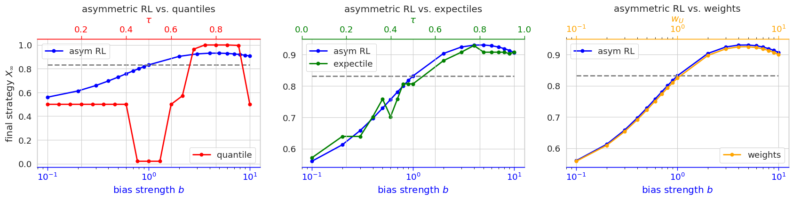
And now, in a rich environment:
# Compute comparisons in a rich environment
b_xinf, q_xinf, e_xinf, w_xinf = compute_comparisons(0.9, 0.7, b_ratios, q_list, e_list,
w_list, gamma=0, beta=4, Rmin=-1,
Rmax=1, nrb=29, discsig=0.05, lr=0.1)# Plot comparisons in a rich environment
plot_comparisons(b_ratios, q_list, e_list, w_list, b_xinf,
q_xinf, e_xinf, w_xinf, scarcity="rich",
save=True, savename='_figs_v1/TwoArmedMethodComparisonRich.png')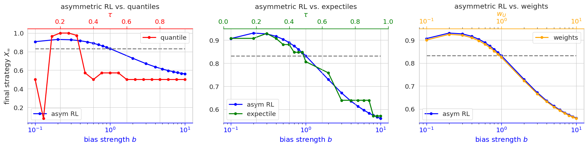
Optimism increases risk-seeking in a risk-reward dilemma
In this section, we study a risk-reward dilemma in which an agent can choose between a high-risk, high-gain option, and a low-risk, low-gain option (see Section Chapter 5). First, we define the environment:
# Define environment
env = RiskRewardDilemma(pc=0.1, pr=0.2, rc=0.5, rr=1, rd=0)Sanity tests
First, we carry out sanity tests in order to check that DDRLSarsa agents yield the same flow plots as a regular SARSA agent. We compare different DDRL biasing methods in order to choose the most appropriate. To this end, we first define a function that allows us to compare flowplots across 3 different conditions.
## Functions to plot 3 flowplots and associated trajectories
# Plot the flowplots together
def plot_3flowplots(aeis, # list of aeis
x:tuple, # which phase space axes to plot along x axes
y:tuple, # which phase space axes to plot along y axes
NrRandom:int=4, # number of random strategies to average over
Xinits=None, # initial Xs to plot trajectories
decorate=False, # whether to decorate the axes or not
titles=None, # list of titles for 3 plots
xlabel=None, # x-label
ylabel=None, # y-label
cols=None, # list of colors for trajectories
cmap='viridis', # Colormap
axes=None, # Axes to plot into
):
# Style
sns.set_style("white")
sns.set_context("paper", font_scale=1.25, rc={"lines.linewidth": 2})
# Plot the flow plot
for i, ax in enumerate(axes):
aei = aeis[i]
fp.plot_strategy_flow(aei, x, y, flowarrow_points = np.linspace(0.01 ,0.99, 9),
NrRandom=NrRandom, cmap=cmap, axes=ax)
# Plot trajectory if initial strategies are specified
if Xinits != None:
trajs = [] # trajectories
fprs = [] # are fixed points reached?
for _, Xinit in enumerate(Xinits):
trj, fpr = aei.trajectory(Xinit, Tmax=1000, tolerance=1e-6)
trajs.append(trj)
fprs.append(fpr)
fp.plot_trajectories(trajs, x, y, fprs=fprs, axes=ax, cols=cols)
# Add titles, xlabels and ylabels to subplots if needed
if decorate==True:
for i, ax in enumerate(axes):
ax.set_xlabel(xlabel)
ax.set_title(titles[i])
ax1.set_ylabel(ylabel)We compare DDRLSarsa agents and regular SARSA agents across 3 values of the discount factor \(\gamma\): \(\gamma = 0\), \(\gamma = 0.4\), and \(\gamma = 0.9\). First, we create neutral DDRLSarsa agents which take the mean of their Q-value distribution as their Q-value estimate.
# Values of gamma
gammas = [0., 0.4, 0.9]# Define agents to compare
aeis_reg = [] # regular SARSA agents
aeis_ddrl = [] # DDRLSarsa agents
for i, gamma in enumerate(gammas):
aei_reg = stratSARSA(env=env, learning_rates=0.1, discount_factors=gamma,
choice_intensities=50, use_prefactor=True)
aeis_reg.append(aei_reg)
aei_ddrl = DDRLSarsa(env, nr_reward_bins=29, discretization_sigma=0.05,
learning_rates=0.1, discount_factors=gamma,
choice_intensities=50, Rmin=0, Rmax=1,
method="mean", use_prefactor=True)
aeis_ddrl.append(aei_ddrl)Now, we can visualize the flowplots.
# Phase space items to plot along the x- and y- axes
x = ([0], [0], [0]) # prosperous state
y = ([0], [1], [0]) # degraded state
# For trajectories
Xinits = [np.ones((1, 2, 2)) * 0.5] # initial strategy
cols = ["orange"] # trajectory color
# Decorations
titles = [r'$\gamma = 0.0$', r'$\gamma = 0.4$', r'$\gamma = 0.9$']
xlabel = "prob. safe action in prosp. state"
ylabel = "prob. safe action in deg. state"
# Figure and axes
fig, (ax1, ax2, ax3) = plt.subplots(1, 3, figsize=(3.2 * 3.8, 3.8))
axes = [ax1, ax2, ax3]
# Plot flow plots and trajectories
plot_3flowplots(aeis_reg, x, y, NrRandom=16, cmap='Reds', axes=axes)
plot_3flowplots(aeis_ddrl, x, y, NrRandom=16, cmap='Blues', decorate=True,
titles=titles, xlabel=xlabel, ylabel=ylabel,
Xinits=Xinits, cols=cols, axes=axes)
# Additional decorations
ax3.plot([], [], color='red', label='detSarsa')
ax3.plot([], [], color='blue', label='DDRLSarsa')
ax3.legend(bbox_to_anchor=(1.01, 1.01))
# Save the figure
plt.savefig('_figs_v1/RRSanityTestMean.png', dpi=300, bbox_inches='tight')Now, we compare the regular SARSA agents with an expectile-DDRLSarsa agent (\(\tau = 0.5\), which should be equivalent with taking the mean of the Q-value distribution). Defining the expectile agents:
# Define agents to compare
aeis_ddrl = [] # DDRLSarsa agents
for i, gamma in enumerate(gammas):
aei_ddrl = DDRLSarsa(env, nr_reward_bins=29, discretization_sigma=0.05,
learning_rates=0.1, discount_factors=gamma,
choice_intensities=50, Rmin=0, Rmax=1,
method="expectile", tau=0.5, use_prefactor=True)
aeis_ddrl.append(aei_ddrl)And visualizing the flowplots:
# Figure and axes
fig, (ax1, ax2, ax3) = plt.subplots(1, 3, figsize=(3.2 * 3.8, 3.8))
axes = [ax1, ax2, ax3]
# Plot flow plots and trajectories
plot_3flowplots(aeis_reg, x, y, NrRandom=16, cmap='Reds', axes=axes)
plot_3flowplots(aeis_ddrl, x, y, NrRandom=16, cmap='Blues', decorate=True,
titles=titles, xlabel=xlabel, ylabel=ylabel,
Xinits=Xinits, cols=cols, axes=axes)
# Additional decorations
ax3.plot([], [], color='red', label='detSarsa')
ax3.plot([], [], color='blue', label='DDRLSarsa')
ax3.legend(bbox_to_anchor=(1.01, 1.01))
# Save the figure
plt.savefig('_figs_v1/RRSanityTestExpectile.png', dpi=300, bbox_inches='tight')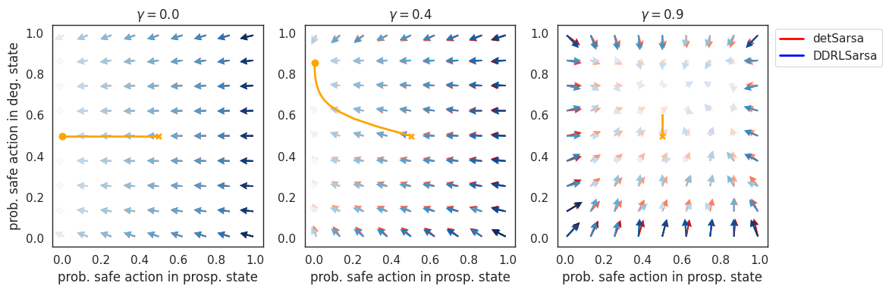
Finally, we compare the regular SARSA agents with a weights-DDRLSarsa agent (\(w_U = 1\), which should be equivalent with taking the mean of the Q-value distribution). Defining the weights agents:
# Define agents to compare
aeis_ddrl = [] # DDRLSarsa agents
for i, gamma in enumerate(gammas):
aei_ddrl = DDRLSarsa(env, nr_reward_bins=29, discretization_sigma=0.05,
learning_rates=0.1, discount_factors=gamma,
choice_intensities=50, Rmin=0, Rmax=1,
method="weights", wU=1., use_prefactor=True)
aeis_ddrl.append(aei_ddrl)Now visualizing:
# Figure and axes
fig, (ax1, ax2, ax3) = plt.subplots(1, 3, figsize=(3.2 * 3.8, 3.8))
axes = [ax1, ax2, ax3]
# Plot flow plots and trajectories
plot_3flowplots(aeis_reg, x, y, NrRandom=16, cmap='Reds', axes=axes)
plot_3flowplots(aeis_ddrl, x, y, NrRandom=16, cmap='Blues', decorate=True,
titles=titles, xlabel=xlabel, ylabel=ylabel,
Xinits=Xinits, cols=cols, axes=axes)
# Additional decorations
ax3.plot([], [], color='red', label='detSarsa')
ax3.plot([], [], color='blue', label='DDRLSarsa')
ax3.legend(bbox_to_anchor=(1.01, 1.01))
# Save the figure
plt.savefig('_figs_v1/RRSanityTestWeights.png', dpi=300, bbox_inches='tight')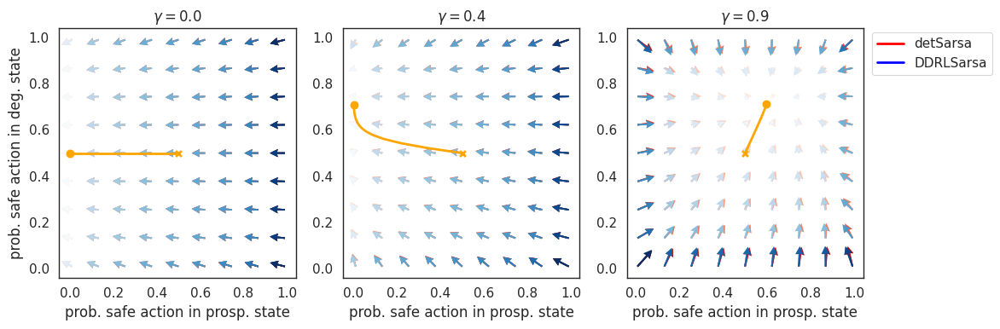
Influence of optimism/pessimism
Since the flowplots obtained with the weights method are closest to the regular SARSA agents’ flowplots, we use this method to implement optimism/pessimism. We study the influence of optimism for a low discount factor \(\gamma = 0.4\), and for a high discount factor \(\gamma = 0.9\). We assume that, in the degraded state, the agent always chooses the safe action (since it is the only one which can take it back to the prosperous state).
# Levels of optimism/pessimism (defined by upper weight values w_U)
weights = np.array([0.1, 0.2, 0.4, 0.8, 1., 2., 4., 8., 10.])
# Phase space items to plot along the x-axis
x = ([0], [0], [0])
# Range and resolution
res = np.linspace(0, 1., 21)
res[0] = 0.0001
res[-1] = 0.9999
# Value of X^{0,1,0}
otherXs = np.ones((len(res)))For a low discount factor \(\gamma = 0.4\):
# Plot and save - gamma = 0.4
compare_levels(env, weights, gamma=0.4, beta=50., Rmin=0,
Rmax=1, xinds=x, res=res, nrb=29, discsig=0.05,
traj_len=200, otherXs=otherXs, cmap='coolwarm',
save=True, savename='_figs_v1/RRPhasePlotGamma04.png')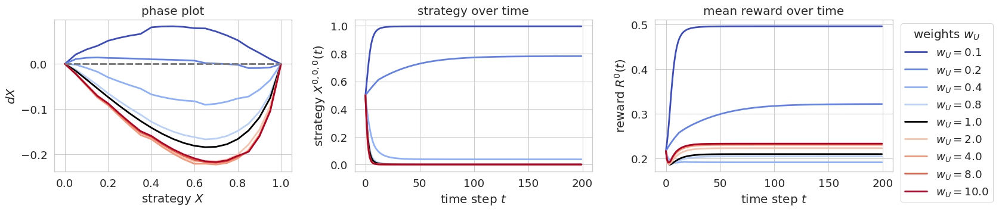
For a high discount factor \(\gamma=0.9\):
# Plot and save - gamma = 0.9
compare_levels(env, weights, gamma=0.9, beta=50., Rmin=0,
Rmax=1, xinds=x, res=res, nrb=29, discsig=0.05,
traj_len=200, otherXs=otherXs, cmap='coolwarm',
save=True, savename='_figs_v1/RRPhasePlotGamma09.png')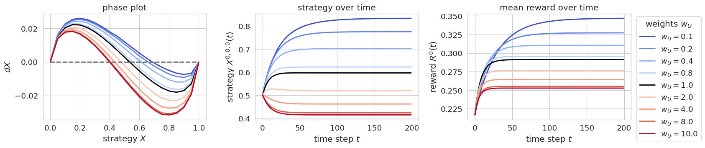
We can visualize the impact of optimism/pessimism on the agent’s strategy in both states, by using flowplots. Here, we show flowplots for a pessimistic agent (\(w_U = 0.2\)), a neutral agent (\(w_U = 1\)), and an optimistic agent (\(w_U = 5\)). First, we study how optimism/pessimism impacts the strategy of an agent with low discount factor \(\gamma = 0.4\).
x = ([0], [0], [0]) # prosperous state
y = ([0], [1], [0]) # degraded state
w_list = [0.2, 1, 5] # list of weights# Define agents to compare
aeis = [] # DDRLSarsa agents
for i, w in enumerate(w_list):
aei = DDRLSarsa(env, nr_reward_bins=29, discretization_sigma=0.05,
learning_rates=0.1, discount_factors=0.4,
choice_intensities=50, Rmin=0, Rmax=1,
method="weights", wU=w, use_prefactor=True)
aeis.append(aei)# For trajectories
Xinits = [np.ones((1, 2, 2)) * 0.5] # initial strategy
cols = ["orange"] # trajectory color
# Decorations
titles = [r'$w = 0.2$', r'$w = 1$', r'$w = 5$']
xlabel = "prob. safe action in prosp. state"
ylabel = "prob. safe action in deg. state"
# Figure and axes
fig, (ax1, ax2, ax3) = plt.subplots(1, 3, figsize=(3.2 * 3.8, 3.8))
axes = [ax1, ax2, ax3]
# Plot flow plots and trajectories
plot_3flowplots(aeis, x, y, NrRandom=16, cmap='Blues', decorate=True,
titles=titles, xlabel=xlabel, ylabel=ylabel,
Xinits=Xinits, cols=cols, axes=axes)
# Visualize fixed point coordinates
for i, aei in enumerate(aeis):
ax = axes[i]
trj, fpr = aei.trajectory(Xinits[0], Tmax=1000, tolerance=1e-6)
fixedp = trj[-1, 0, :, 0]
fx = fixedp[0]
fy = fixedp[1]
ax.plot([fx, fx], [0, fy], color='gray', ls='--', lw=1)
ax.plot([0, fx], [fy, fy], color='gray', ls='--', lw=1)
# Save the figure
plt.savefig('_figs_v1/RRFlowplotsGamma04Beta50.png', dpi=300, bbox_inches='tight')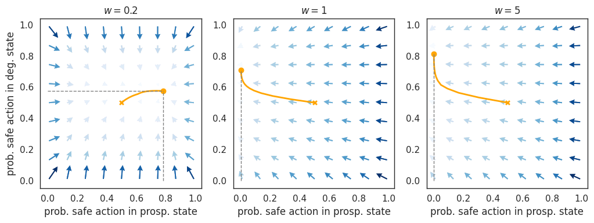
We then turn to agents with a high discount factor \(\gamma=0.9\).
# Define agents to compare
aeis = [] # DDRLSarsa agents
for i, w in enumerate(w_list):
aei = DDRLSarsa(env, nr_reward_bins=29, discretization_sigma=0.05,
learning_rates=0.1, discount_factors=0.9,
choice_intensities=50, Rmin=0, Rmax=1,
method="weights", wU=w, use_prefactor=True)
aeis.append(aei)# For trajectories
Xinits = [np.ones((1, 2, 2)) * 0.5] # initial strategy
cols = ["orange"] # trajectory color
# Decorations
titles = [r'$w = 0.2$', r'$w = 1$', r'$w = 5$']
xlabel = "prob. safe action in prosp. state"
ylabel = "prob. safe action in deg. state"
# Figure and axes
fig, (ax1, ax2, ax3) = plt.subplots(1, 3, figsize=(3.2 * 3.8, 3.8))
axes = [ax1, ax2, ax3]
# Plot flow plots and trajectories
plot_3flowplots(aeis, x, y, NrRandom=16, cmap='Blues', decorate=True,
titles=titles, xlabel=xlabel, ylabel=ylabel,
Xinits=Xinits, cols=cols, axes=axes)
# Visualize fixed point coordinates
for i, aei in enumerate(aeis):
ax = axes[i]
trj, fpr = aei.trajectory(Xinits[0], Tmax=1000, tolerance=1e-6)
fixedp = trj[-1, 0, :, 0]
fx = fixedp[0]
fy = fixedp[1]
ax.plot([fx, fx], [0, fy], color='gray', ls='--', lw=1)
ax.plot([0, fx], [fy, fy], color='gray', ls='--', lw=1)
# Save the figure
plt.savefig('_figs_v1/RRFlowplotsGamma09Beta50.png', dpi=300, bbox_inches='tight')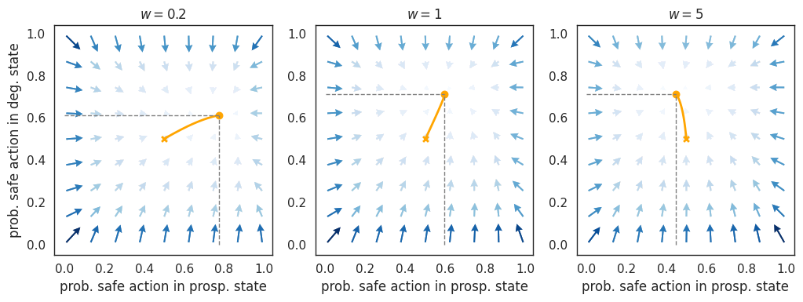
Optimism enhances cooperation in a stag-hunt game
In this section, we investigate the impact of optimism/pessimism on the stag-hunt game defined in Section Chapter 5. This is a coordination game between two agents: if both agents cooperate at the same time, they reap the most rewards. First, we define the environment:
env = SocialDilemma(R=3, P=0, S=-2, T=1)Sanity tests
As above, we carry out sanity tests in order to check that the behavior of neutral DDRLSarsa agents imitate the behavior of regular SARSA agents. Once again, we compare the “mean”, “expectile”, and “weights” methods.
# Methods
methods = ["mean", "expectile", "weights"]# Define agents to compare
aeis_ddrl = [] # DDRLSarsa agents
aeis_reg = [] # regular SARSA agents
for i, method in enumerate(methods):
aei_ddrl = DDRLSarsa(env, nr_reward_bins=29, discretization_sigma=0.05,
learning_rates=0.1, discount_factors=0.9,
choice_intensities=50, Rmin=-2, Rmax=3,
method=method, use_prefactor=True)
aeis_ddrl.append(aei_ddrl)
aei_reg = stratSARSA(env=env, learning_rates=0.1, discount_factors=0.9,
choice_intensities=50, use_prefactor=True)
aeis_reg.append(aei_reg)Additionally, we plot trajectories with various initial conditions for better visualization.
# Phase space items to plot along the axes
x = ([0], [0], [0]) # agent 1
y = ([1], [0], [0]) # agent 2
# For trajectories
Xinits = []
xys = [(0.5, 0.5), (0.295, 0.205), (0.205, 0.695), (0.805, 0.305), (0.705, 0.795)]
cols = ['orange', 'purple', 'green', 'pink', 'brown']
for t, xy in enumerate(xys):
Xinit = np.ones((2, 1, 2)) * 0.5
Xinit[0, 0, 0] = xy[0]
Xinit[1, 0, 0] = xy[1]
Xinit[0, 0, 1] = 1 - Xinit[0, 0, 0]
Xinit[1, 0, 1] = 1 - Xinit[1, 0, 0]
Xinits.append(Xinit)
# Decorations
titles = ["method = mean", "method = expectile", "method = weights"]
xlabel = "prob. agent 1 cooperating"
ylabel = "prob. agent 2 cooperating"
# Figure and axes
fig, (ax1, ax2, ax3) = plt.subplots(1, 3, figsize=(3.2 * 3.8, 3.8))
axes = [ax1, ax2, ax3]
# Plot flow plots and trajectories
plot_3flowplots(aeis_reg, x, y, NrRandom=16, cmap='Reds', axes=axes)
plot_3flowplots(aeis_ddrl, x, y, NrRandom=16, cmap='Blues', decorate=True,
titles=titles, xlabel=xlabel, ylabel=ylabel,
Xinits=Xinits, cols=cols, axes=axes)
# Additional decorations
ax3.plot([], [], color='red', label='detSarsa')
ax3.plot([], [], color='blue', label='DDRLSarsa')
ax3.legend(bbox_to_anchor=(1.01, 1.01))
# Save the figure
plt.savefig('_figs_v1/SHSanityTests.png', dpi=300, bbox_inches='tight')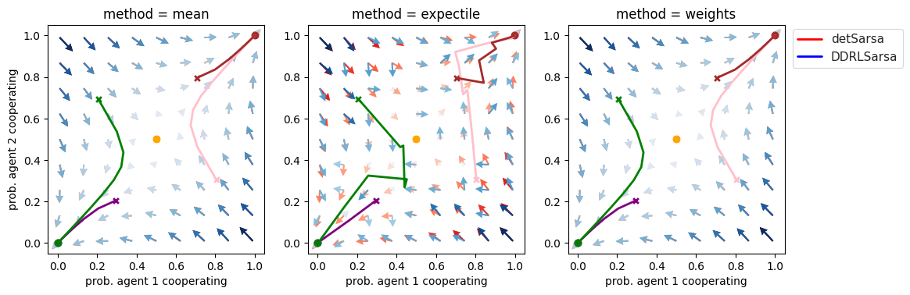
Influence of optimism/pessimism
Once again, neutral weights-DDRLSarsa agents show less errors than neutral expectile-DDRLSarsa agents. Therefore, we use the weights method to explore the effects of optimism and pessimism on cooperation in the stag-hunt game. In particular, we look at how optimism/pessimism impacts the separatrix of the flowplot. This separatrix demarcates the domain where all initial strategies lead to mutual cooperation from the domain where all initial strategies lead to mutual defection.
First, let’s define functions to plot this separatrix.
def compile_strategy(p0c:float, # cooperation probability of agent zero
p1c:float): # cooperation probability of agent one
strat = np.zeros((2, 1, 2))
strat[0, 0, 0] = p0c
strat[1, 0, 0] = p1c
strat[0, 0, 1] = 1 - p0c
strat[1, 0, 1] = 1 - p1c
return strat
def plot_separatrix(aei, ax):
# Add saddle node
# by reversing the dynamics from two agents with identical strategies
o = [0.5, 0.5]; o = compile_strategy(*o)
for _ in range(1000): o, _ = aei.reverse_step(o)
# Add separatrix
o = o[:, 0, 0] - np.array([0, 0.0001])
o1 = compile_strategy(*o)
o2 = compile_strategy(*o[::-1])
sep1=[]; sep2=[]
for _ in range(1000): o1, _ = aei.reverse_step(o1); sep1.append(o1)
for _ in range(1000): o2, _ = aei.reverse_step(o2); sep2.append(o2)
fp.plot_trajectories([sep1, sep2], x=x, y=y, cols=['dimgray'], lws=[1],
lss=['--'], alphas=[0.95], axes=ax)We compare a pessimistic agent with \(w_U=0.25\), with a neutral agent (\(w_U=1\)) and an optimistic agent (\(w_U = 4\)).
weights = [0.25, 1., 4.]# Define agents to compare
aeis = [] # DDRLSarsa agents
for i, weight in enumerate(weights):
aei = DDRLSarsa(env, nr_reward_bins=29, discretization_sigma=0.05,
learning_rates=0.1, discount_factors=0.9,
choice_intensities=50, Rmin=-2, Rmax=3,
method="weights", wU=weight, use_prefactor=True)
aeis.append(aei)Now plotting:
# Decorations
titles = [r'$w_U=0.25$', r'$w_U=1$', r'$w_U=4$']
xlabel = "prob. agent 1 cooperating"
ylabel = "prob. agent 2 cooperating"
# Figure and axes
fig, (ax1, ax2, ax3) = plt.subplots(1, 3, figsize=(3.2 * 3.8, 3.8))
axes = [ax1, ax2, ax3]
# Plot flow plots and trajectories
plot_3flowplots(aeis, x, y, NrRandom=16, cmap='Blues', decorate=True,
titles=titles, xlabel=xlabel, ylabel=ylabel,
Xinits=Xinits, cols=cols, axes=axes)
# Plot separatrices
for i, aei in enumerate(aeis):
ax = axes[i]
plot_separatrix(aei, ax)
# Save the figure
plt.savefig('_figs_v1/SHFlowPlots.png', dpi=300, bbox_inches='tight')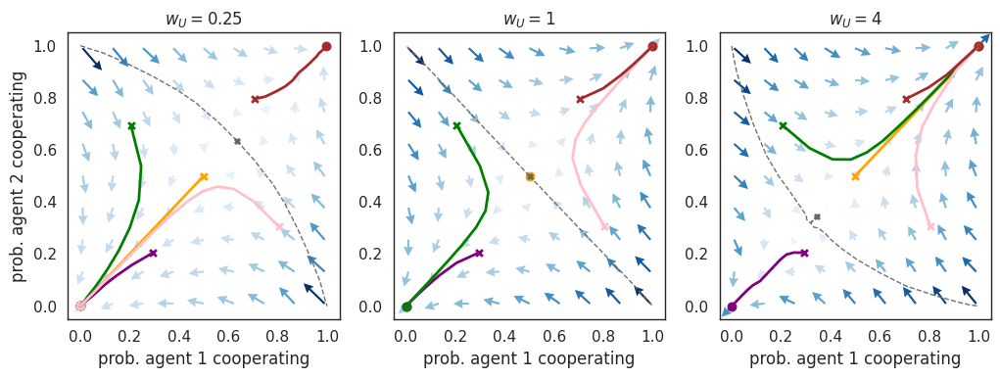
We can also plot the phase plot for one agent, assuming the other agent always plays the same strategy as the first one. This is equivalent with visualizing the diagonal of the above flowplots.
weights = np.array([0.1, 0.2, 0.4, 0.8, 1., 2., 4., 8., 10.])
x = ([0], [0], [0])
res = np.linspace(0, 1., 21)
res[0] = 0.0001
res[-1] = 0.9999
otherXs = np.linspace(0, 1., 21)
otherXs[0] = 0.0001
otherXs[-1] = 0.9999compare_levels(env, weights, gamma=0.9, beta=50., Rmin=-2, Rmax=3,
xinds=x, res=res, nrb=29, discsig=0.05, traj_len=30,
otherXs=otherXs, cmap='coolwarm', save=True,
savename='_figs_v1/SHPhasePlots.png')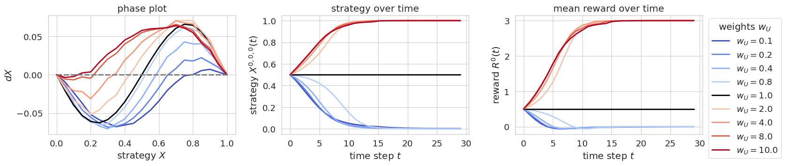
Optimism has no effect in a prisoner’s dilemma
As a complement, we can turn the stag-hunt game into a prisoner’s dilemma, which is another social dilemma with a different reward structure. In a prisoner’s dilemma, typically, mutual cooperation is not an equilibrium; both agents are incentivized to defect. First, we define the environment:
env = SocialDilemma(R=1, P=0, S=-2, T=3)And we carry the same sanity tests as above:
methods = ["mean", "expectile", "weights"]# Define agents to compare
aeis_ddrl = [] # DDRLSarsa agents
aeis_reg = [] # regular SARSA agents
for i, method in enumerate(methods):
aei_ddrl = DDRLSarsa(env, nr_reward_bins=29, discretization_sigma=0.05,
learning_rates=0.1, discount_factors=0.9,
choice_intensities=50, Rmin=-2, Rmax=3,
method=method, use_prefactor=True)
aeis_ddrl.append(aei_ddrl)
aei_reg = stratSARSA(env=env, learning_rates=0.1, discount_factors=0.9,
choice_intensities=50, use_prefactor=True)
aeis_reg.append(aei_reg)# Phase space items to plot on axes
x = ([0], [0], [0]) # agent 1
y = ([1], [0], [0]) # agent 2
# For trajectories
Xinits = []
xys = [(0.5, 0.5), (0.295, 0.205), (0.205, 0.695), (0.805, 0.305), (0.705, 0.795)]
cols = ['orange', 'purple', 'green', 'pink', 'brown']
for t, xy in enumerate(xys):
Xinit = np.ones((2, 1, 2)) * 0.5
Xinit[0, 0, 0] = xy[0]
Xinit[1, 0, 0] = xy[1]
Xinit[0, 0, 1] = 1 - Xinit[0, 0, 0]
Xinit[1, 0, 1] = 1 - Xinit[1, 0, 0]
Xinits.append(Xinit)
# Decorations
titles = ["method = mean", "method = expectile", "method = weights"]
xlabel = "prob. agent 1 cooperating"
ylabel = "prob. agent 2 cooperating"
# Figure and axes
fig, (ax1, ax2, ax3) = plt.subplots(1, 3, figsize=(3.2 * 3.8, 3.8))
axes = [ax1, ax2, ax3]
# Plot flow plots and trajectories
plot_3flowplots(aeis_reg, x, y, NrRandom=16, cmap='Reds', axes=axes)
plot_3flowplots(aeis_ddrl, x, y, NrRandom=16, cmap='Blues', decorate=True,
titles=titles, xlabel=xlabel, ylabel=ylabel,
Xinits=Xinits, cols=cols, axes=axes)
# Additional decorations
ax3.plot([], [], color='red', label='detSarsa')
ax3.plot([], [], color='blue', label='DDRLSarsa')
ax3.legend(bbox_to_anchor=(1.01, 1.01))
# Save the figure
plt.savefig('_figs_v1/PDSanityTests.png', dpi=300, bbox_inches='tight')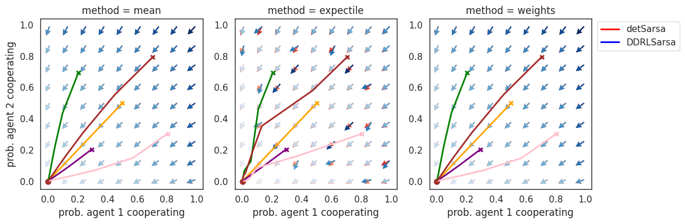
We can investigate the influence of optimism or pessimism by plotting the same phase plots and strategy plots as above, assuming the second agent always behaves like the first.
weights = np.array([0.1, 0.2, 0.4, 0.8, 1., 2., 4., 8., 10.])
x = ([0], [0], [0])
res = np.linspace(0, 1., 21)
res[0] = 0.0001
res[-1] = 0.9999
otherXs = np.linspace(0, 1., 21)
otherXs[0] = 0.0001
otherXs[-1] = 0.9999compare_levels(env, weights, gamma=0.9, beta=50., Rmin=-2, Rmax=3,
xinds=x, res=res, nrb=29, discsig=0.05, traj_len=30,
otherXs=otherXs, cmap='coolwarm', save=True,
savename='_figs_v1/PDPhasePlots.png')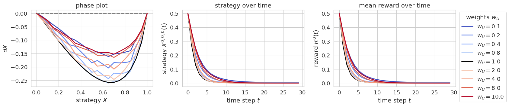